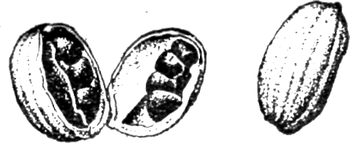

Кардамон (Elettaria Cardamomum)
")
Травянистое многолетнее растение семейства имбирных.
Родина — Малабарский берег Индии и Цейлон. Здесь же — основные места разведения.
В качестве пряности употребляются плоды (семена) кардамона, заключенные в коробочки-капсулы. Их снимают слегка недозрелыми, сушат на солнце, смачивают водой и вновь сушат. Получаются белые трехгранные капсулы длиной 0,8—1,5 сантиметра у малабарского кардамона и длиной до 4 сантиметров у цейлонского, менее ароматичного. Внутри капсул — три гнезда, в каждом из которых по 3—4 темных семечка. Эти-то семечки с сильным, острым, пряно-жгучим, слегка камфарным запахом и являются пряностью. Тонкая оболочка капсул, легко ломающаяся от нажима пальцами, не имеет запаха и в кулинарии не употребляется. Она играет лишь роль пленки, предохраняющей кардамон от выдыхания.
Наряду с собственно кардамоном в Азии и Африке имеется близкое к кардамону растение рода Amomum, семена нескольких видов которого обладают кардамонным запахом.
Таковы, например, сиамский кардамон (Amomum cardamomum L.), имеющий маленькие круглые серо-коричневые плодики, и большой яванский кардамон (Amomum maximum Roxb), применяемый в азиатской кухне, но чрезвычайно редко попадающий на европейские рынки.

Кардамон принадлежит к одной из наиболее изысканных пряностей в западноевропейской и русской кухнях.
Он входит в состав почти всех смесей пряностей.
Но основная его область применения — ароматизация мучных кондитерских изделий — кексов, печений, коврижек, пряников — и особенно ароматизация кондитерских начинок в рулетах, слоеном тесте и в изделиях с добавлением кофе (например, кофейный торт). Сильный запах кардамона способен хорошо сохраняться в таких изделиях даже, несмотря на высокую температуру в духовке и «перебить» слишком однообразный и навязчивый кофейный запах или придать ему неожиданную пикантность.
Но помимо этого традиционного у нас применения кардамона его можно использовать для облагораживания домашних настоек и наливок, как компонент в маринадах для фруктов, в некоторых сладких блюдах (кисели, компоты, творожные пасты) и — не в последнюю очередь — в рыбных супах, в пряных отварах для рыбы, для ароматизации рыбных фаршей, начинок, запеканок.
В Западной Европе кардамон употребляют в гороховые супы, в картофельные салаты, в рисовые блюда и в мясные начинки и фарши.
Вносить кардамон надо крайне осторожно, поскольку это сильная пряность. Одной капсулки вполне достаточно на 1 килограмм теста или фарша. Но предварительно надо размолоть кардамон.
Для сладких блюд (компоты, кисели) достаточно половины или третьей части капсулки на 1 литр жидкости, причем в этом случае, как и в супы, кардамон в виде зерен вносят за 5 минут до готовности, а в молотом виде — непосредственно перед окончанием тепловой обработки, буквально на несколько секунд.
Кардамон в сочетании с мускатным орехом хорошо использовать для ароматизации соуса к отварной рыбе.